Pressure washing and exterior cleaning in Bozeman, MT
Bozeman's go-to crew for driveways, siding, decks and fences. We cover the whole Gallatin Valley, from Belgrade and Four Corners to Gallatin Gateway and Manhattan. Montana weather is hard on your property. Martin Property Care brings it back.
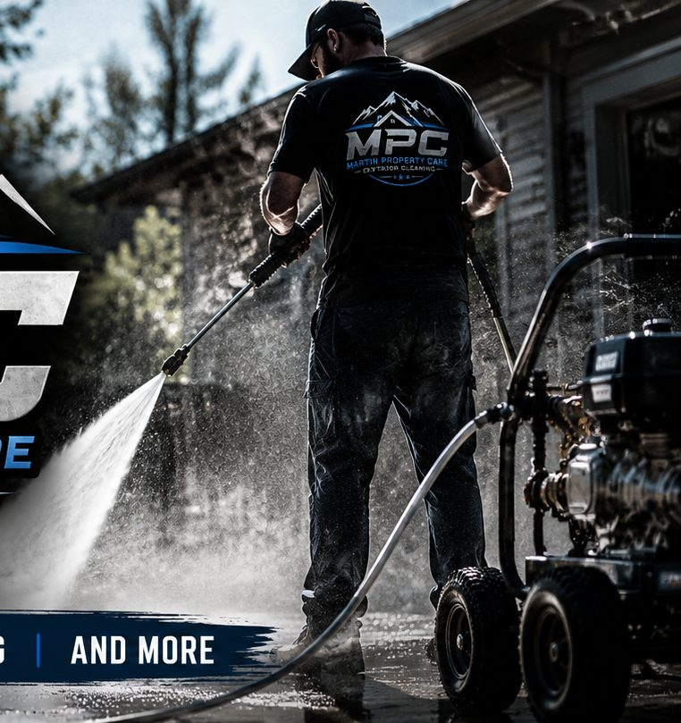
These aren't stock photos. They're Martin Property Care jobs. Grab the handle and pull it across.
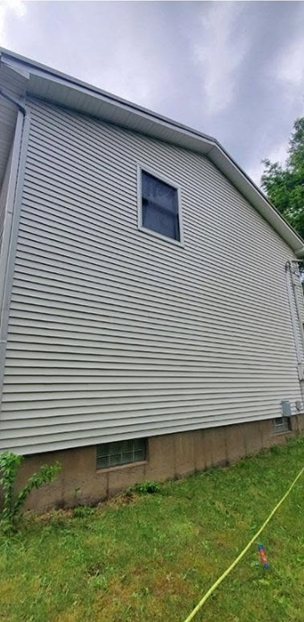
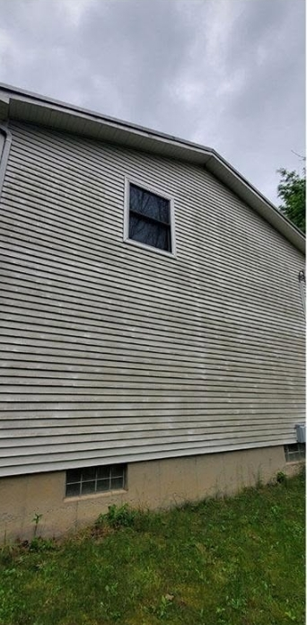
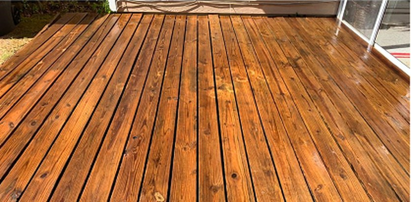
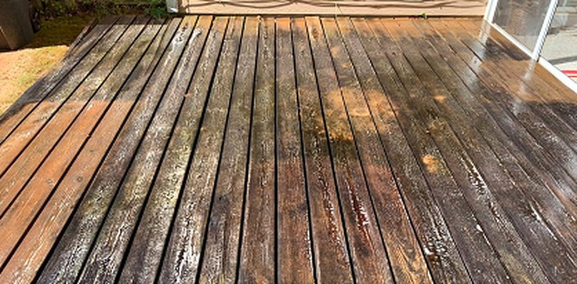
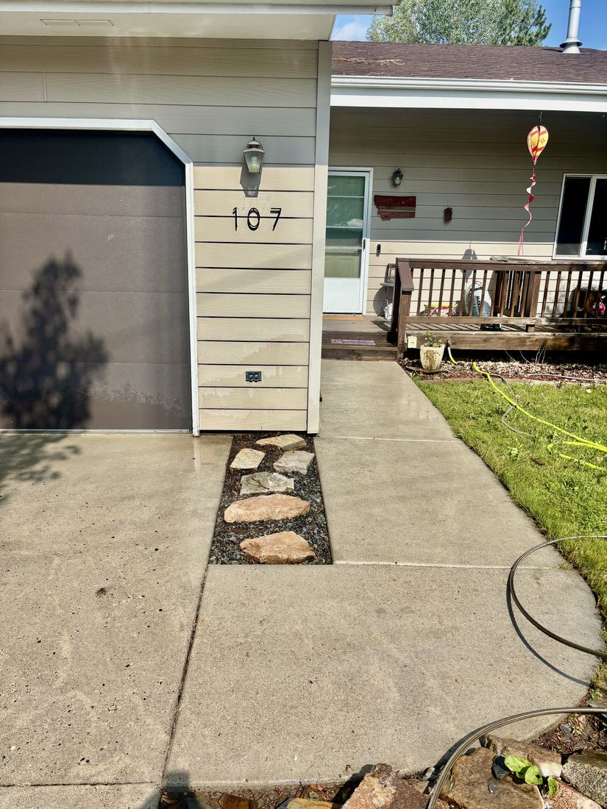
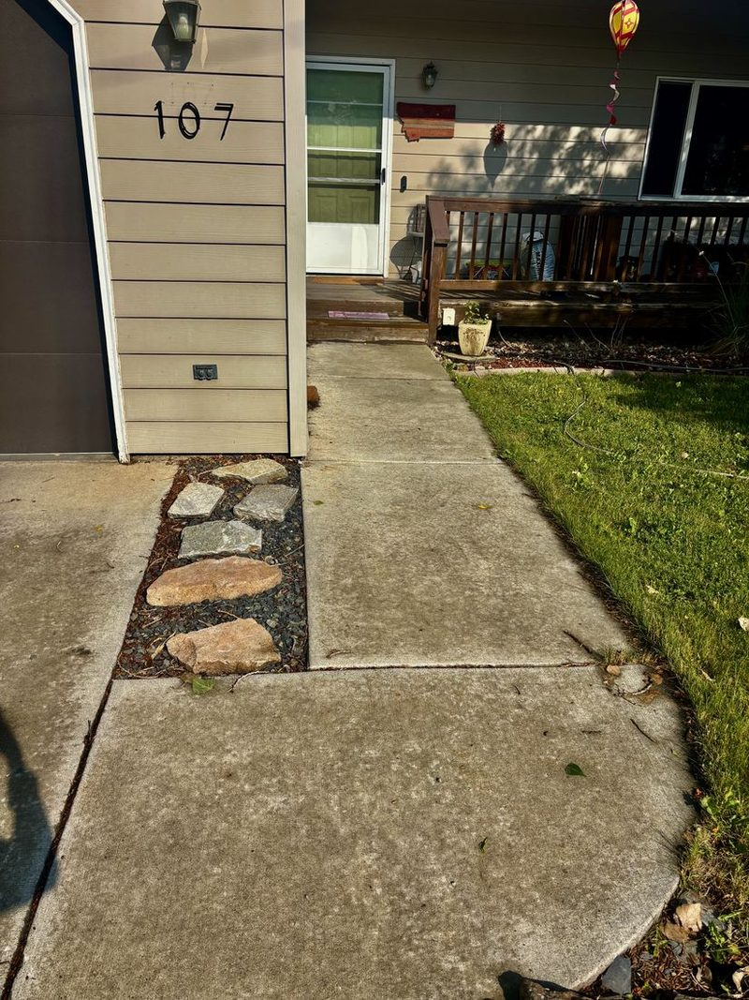
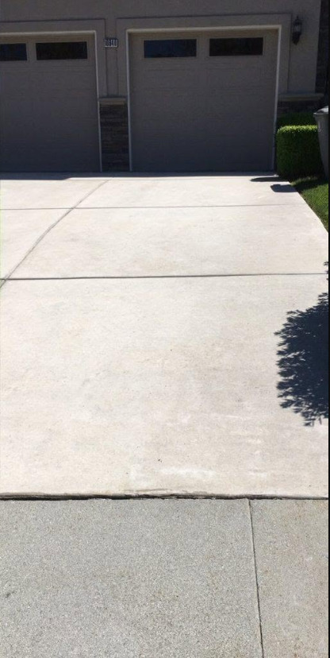
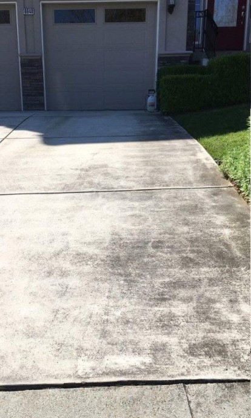
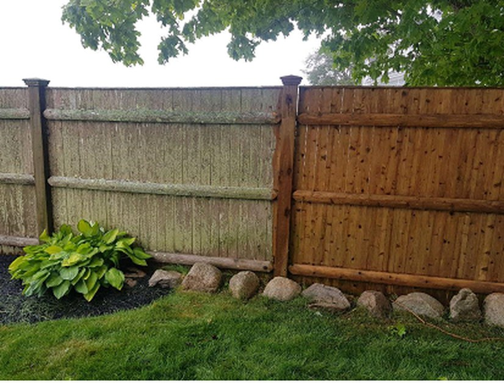
No editing, no tricks: the left side just hasn't been cleaned yet. That green film comes off, and the wood you paid for comes back.
Free estimates on everything. If it's outside and it's dirty, it's probably on this list.
Any size, one flat price this month. We run a professional surface cleaner across the whole slab, then rinse and detail the edges. Dirt, tire marks and organic staining lift out, and the concrete dries lighter than most owners expect. Most driveways are done in a single visit, usually inside two hours.
More on driveway cleaningLow-pressure washing that is safe for siding, trim, soffits and windows. Professional detergents do the work instead of raw pressure, so vinyl, Hardie board and painted wood keep their finish. Grime, mildew, cobwebs and wasp nests come off the whole exterior. Your house looks newer from the street the same day.
More on house washingWood decks, concrete patios and pavers. We strip years of gray weathering, dirt and mildew without tearing up the wood grain. The surface comes back ready to enjoy as it is, or clean and dry enough to take stain and sealer properly. A smart first step before summer cookouts or listing photos.
Wood and vinyl fencing, one side or both. That green film is algae and the dull gray is weathered surface fiber. Both rinse away with the right mix of detergent and pressure, panel by panel, posts and gates included. Your fence goes back to looking like the wood you paid for, not moss.
Concrete walkways, sidewalks, steps and stone borders, from the street to your front door. We lift the dirt, moss and algae that make walking surfaces slick when they are wet, then rinse everything clean to the edges. Safer footing for guests and better curb appeal for the part of the property everyone sees first.
We clear leaves, pine needles and roof grit out of the gutters by hand, then flush the downspouts until water runs free. Clogged gutters overflow into fascia, siding and foundations, and Montana snowmelt finds every weak spot. It is an inexpensive job now that prevents expensive water damage later.
More on gutter cleaningWe handle small commercial too: gas stations, offices, storefronts and shared walkways. Property managers and HOAs, ask about recurring service. We can keep driveways, sidewalks and building exteriors on a schedule so they never get bad in the first place. One call sets it up, and proof of insurance is ready when you need it.
No measuring, no surprises. Whatever size your driveway is, it gets cleaned for ninety-nine bucks. That's the whole deal.
Real reviews from real customers on our Google Business Profile.
"MPC did a great job washing my house and driveway. They were very professional and with affordable rates. I highly recommend Martin Property Care!"
Brady H., Google review"I hadn't really thought about how bad my driveway was until I saw the difference. All my neighbors have commented on it."
Mikael, Google review"Tyler was very professional and did the work within the timeframe he estimated. Our driveway looks great and our property was left in good condition."
Kristin S., Google review"Very happy with the service. Tyler was friendly, and got everything looking clean again. Would definitely use him again."
Heidy S., Google reviewMartin Property Care is a veteran-owned pressure washing company based in Bozeman, Montana. It is owned and operated by Tyler Martin, who served six years in the U.S. Army before starting the business. Tyler runs every job himself: house washing, driveway cleaning, decks, fences, walkways and gutters across Bozeman, Belgrade, Four Corners, Gallatin Gateway and Manhattan. The standards are the ones he learned in the service. Show up on time. Do the job right. Leave the place better than you found it. Every estimate is free, every job is fully insured, and Tyler answers his own phone, so the person who quotes your driveway is the same person who cleans it. If you live in the Gallatin Valley and something outside your home has gone gray or green, call or text. Worst case, you get a straight answer and a free price.
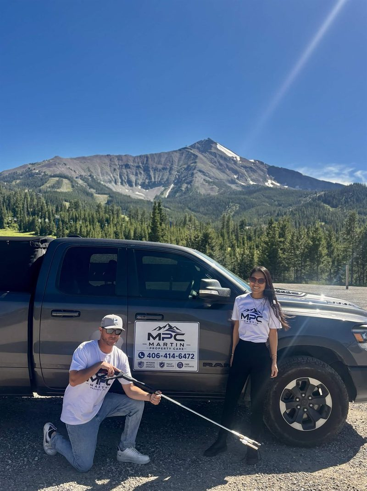
The questions we get most, answered the same way we would answer them on the phone.
Every job is quoted individually because size and buildup vary. Estimates are free and there is no obligation. Driveways are a flat $99 through July, any size. Call or text with your address and you will usually have a number the same day.
Not the way we do it. Houses get a soft wash: low pressure and professional detergents that lift grime and mildew without stripping paint or forcing water behind vinyl. Full pressure is saved for concrete and other hard surfaces that can take it.
Most driveways take one to two hours. A full house wash usually runs about half a day. We confirm the timing with your estimate and stick to it.
No. We just need access to an outdoor water spigot and the areas being cleaned. Plenty of customers are at work while we wash and come home to the finished result.
Yes. Martin Property Care is fully insured on every job, and proof of insurance is available on request. Property managers and HOAs ask for it all the time, and that is no problem.
Spring through fall is ideal, and we work any time temperatures stay above freezing. Booking ahead of the summer rush means faster scheduling, and clearing gutters before the snow saves headaches later.
Not sure if you're in range? Call or text; worst case, we point you in the right direction.
Tell us what needs cleaning and we'll get back to you with a free, no-obligation estimate, usually the same day.
| Monday - Friday | 7 AM - 7 PM |
| Saturday - Sunday | 10 AM - 7 PM |
Straight From the Job Site
Tyler posts the jobs as they happen: driveways mid-wash, decks that came back from the dead, and whatever the Gallatin Valley weather threw at us that week. It updates here the moment he posts it.
Not seeing the feed? Some browsers and ad blockers hide embedded Facebook content.
See Our Facebook PageView all posts on Facebook